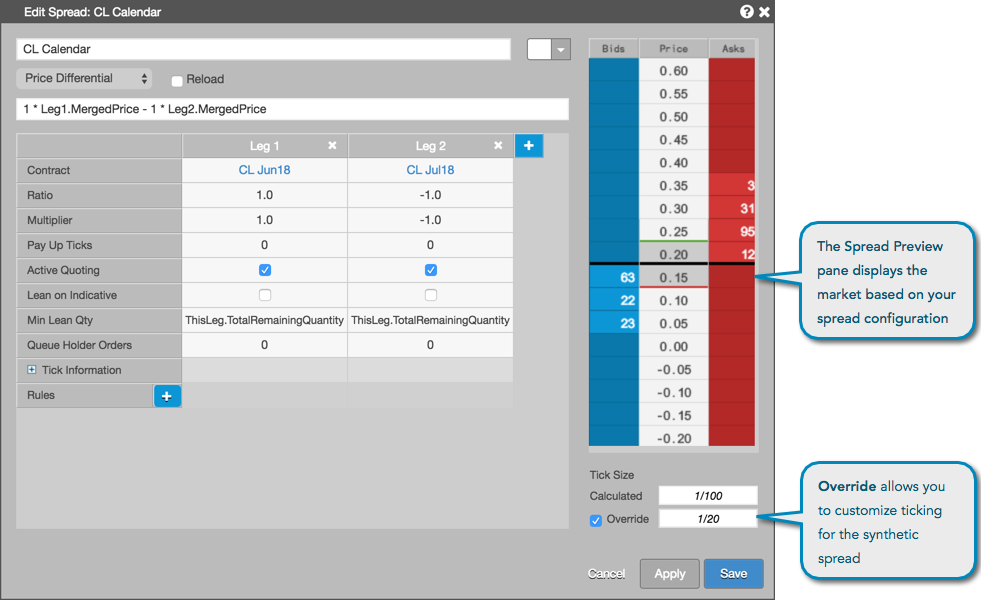

After configuring the legs of the spread and selecting your price display or formula, the spread prices display in the Spread Preview pane. This ladder shows the number of current bids and offers at each price level in the market, which allows you to preview what is displayed in the MD Trader® Spread pane before launching the spread.
Note: You can make changes to the spread parameters (e.g., change the Multiplier) or custom spread formula and click Apply. The ticking information and spread preview ladder show the impact to the spread configuration.
The Override setting is used for modifying the calculated tick size for the spread. You can check (enable) this setting and enter a custom size, then preview the results in the Spread Preview pane.
